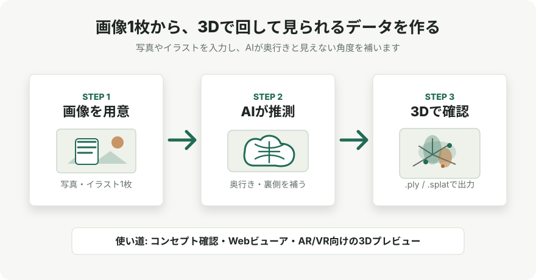

AI / 3D
TripoSplatで画像1枚から3D Gaussian Splatを生成する
TripoSplatは、1枚の2D画像から3D Gaussian Splatting用のアセットを生成するオープンソースモデルです。 メッシュ生成器ではなく、点群状のガウシアン表現を生成するため、用途と制約を分けて理解する必要があります。
結論
TripoSplatは、単一画像から .ply や .splat として扱える3D Gaussianアセットを作るモデルです。
公式GitHubとHugging Faceでコードと重みがMITライセンスとして公開され、ComfyUIでもDay 0サポートされています。
実務上の価値は、画像からすぐに回転閲覧できる3D表現を作れること、そしてガウシアン数を用途に応じて調整できることです。 一方で、リギング、UV、ポリゴン編集を前提にしたメッシュ制作とは別物なので、ゲーム用最終アセットやDCC編集に使う場合は変換工程や品質確認が必要です。
何ができるのか

3D Gaussian Splattingは、表面をポリゴンで直接表すのではなく、多数の半透明な楕円体状プリミティブを空間に配置して見た目を再構成する表現です。 TripoSplatはこの表現を、複数視点の撮影なしに1枚の画像から生成することを狙っています。
公式説明では、キャラクター、プロップ、スタイル化されたオブジェクトのように、見た目の印象が重要な対象で強みがあるとされています。
特徴
| 観点 | 要点 | 制作上の意味 |
|---|---|---|
| 入力 | 1枚の2D画像 | 撮影セットや多視点画像がなくても試作できる。 |
| 出力 | .ply / .splat |
SuperSplatやSparkJSなどの3DGSビューアで確認できる。 |
| 密度制御 | DeGにより必要な場所へ多くのガウシアンを割り当てる | 細部に密度を寄せ、単純な領域は軽くする設計。 |
| 予算制御 | 最大262,144までガウシアン数を調整可能 | 背景用は軽く、主役アセットは高密度にするLoD的な運用ができる。 |
| 公開形態 | コードと重みがMITライセンスで公開 | ローカル実行、改変、ワークフロー統合を検討しやすい。 |
DeGの考え方
TripoSplatの中心的なアイデアは、Density-Sampled Gaussians、略してDeGです。 従来の固定グリッドや固定長配列にガウシアンを押し込むのではなく、学習可能な密度分布からガウシアン中心をサンプリングします。
論文では、レンダリング誤差の改善に効く場所へ密度が集まるように学習し、単一の潜在表現から異なる解像度の3DGSを復元できる点が説明されています。 これにより、同じ入力から軽量版と高品質版を取り出すような使い分けがしやすくなります。
さらに、順序を持たない集合的な潜在表現を拡散モデルで扱いやすくするため、VecSeqという再インデックス機構も導入されています。 実装を読むときは、単なる画像から3Dへの変換器ではなく、「可変密度の3DGS表現を生成するモデル」と見ると理解しやすいです。
試す方法
手早く試すなら、ComfyUIのテンプレートから実行する方法が最短です。 ComfyUI公式ブログでは、ComfyUIをv0.23.0以降へ更新し、Template LibraryでTripoSplatを検索する流れが案内されています。
ComfyUI/
└── models/
├── background_removal/
│ └── birefnet.safetensors
├── diffusion_models/
│ └── triposplat_fp16.safetensors
├── clip_vision/
│ └── dino_v3_vit_h.safetensors
└── vae/
├── flux2-vae.safetensors
└── triposplat_vae_decoder_fp16.safetensors
Pythonで直接試す場合は、公式推論コードを取得し、Hugging Faceから重みを ckpts/ に配置します。
公式READMEでは、Hugging Face CLI、huggingface_hub、ModelScope、手動ダウンロードの選択肢が示されています。
hf download VAST-AI/TripoSplat --local-dir ckpts/
pip install numpy safetensors pillow tqdm
python run_example.py
# ブラウザUIで試す場合
pip install gradio
python run_gradio.py注意点
- 3DGS出力は、ポリゴンメッシュ、UV、ボーン、リトポロジ済み形状とは違います。
- 単一画像から背面や隠れた形状を推定するため、見えない部分はモデルの推測になります。
- ガウシアン数を増やすほど品質は上げやすくなりますが、ファイルサイズや描画負荷も増えます。
- 商用利用を検討する場合は、GitHubとHugging Faceの最新ライセンス表記、入力画像の権利、出力物の利用条件を確認してください。
- ローカル実行に必要なGPUメモリや実行時間は環境に依存します。まずは小さい画像と少ないガウシアン数で検証するのが安全です。
向いている使い方
- キャラクターや小物のコンセプトをすばやく3Dで回して確認する。
- AR/VRやブラウザビューアで、見た目重視の3Dプレビューを作る。
- 背景用と主役用でガウシアン数を変え、軽量版と高品質版を使い分ける。
- ComfyUIの画像生成ワークフローに、3DGS出力を後段として組み込む。
逆に、最初からゲームエンジンで物理・衝突・スキニング・UV編集まで行う前提なら、生成後にメッシュ化や手直しが必要になる可能性が高いです。
参照URL
- CGinterest: 画像1枚から3Dガウシアンスプラットを生成できる「TripoSplat」がオープンソースで登場
- Tripo: TripoSplat: Generative 3D Gaussians with Learned Density Control
- GitHub: VAST-AI-Research/TripoSplat
- Hugging Face: VAST-AI/TripoSplat
- arXiv: Generative 3D Gaussians with Learned Density Control
- ComfyUI Blog: Bringing Native Support for 3D Gaussian Splats into ComfyUI with TripoSplat